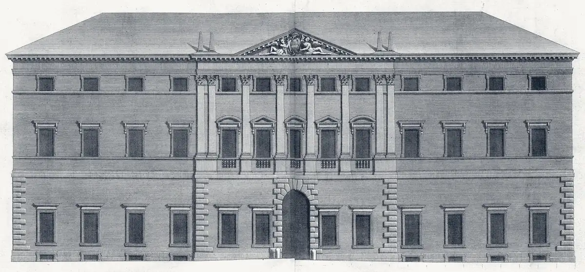

BarbaraRenzullo.
Difesa penale con rigore e attenzione alla persona.
Consulenza e difesa nel diritto penale, nel penale minorile e nella procedura penale, in ogni fase e grado del procedimento.
Richiedi un appuntamento- 1997Inizio dell'attività
- 1999Albo degli Avvocati di Bologna
- 2013Patrocinante in Cassazione
IAree di attività
Competenza tecnica, rigore processuale, umanità.
- I.
Diritto penale
Difesa tecnica in ogni fase e grado del procedimento, con particolare attenzione ai reati contro la persona e contro il patrimonio.
- II.
Penale minorile
Assistenza ai minori coinvolti nel procedimento penale, orientata al recupero e alla tutela dei loro diritti fondamentali.
- III.
Procedura penale
Gestione delle dinamiche processuali, investigazioni difensive e applicazione rigorosa delle garanzie costituzionali.
IILo studio
Tra la Corte d'Appello e il Tribunale penale.

Lo studio è in Via Garibaldi 7, tra piazza San Domenico e piazza dei Tribunali. La Corte d'Appello in Palazzo Baciocchi e il Tribunale penale nell'ex monastero di San Procolo sono a pochi minuti a piedi.
Si riceve su appuntamento, per dedicare a ciascun caso il tempo e la riservatezza che richiede.
- Indirizzo
- Via Garibaldi 7, 40124 BolognaApri in Google Maps ↗
- Telefono
- +39 338 841 8104
Uffici giudiziari di Bologna
- Corte d'Appello e Procura generale
- Palazzo BaciocchiPiazza dei Tribunali 4
- Tribunale penale
- Ex monastero di San ProcoloVia D'Azeglio 56 · dibattimento, GIP e GUP, Riesame, Corte d'Assise
- Tribunale civile e Tribunale di sorveglianza
- Palazzo Legnani-PizzardiVia Farini 1
- Tribunale per i minorenni
- Aule penaliVia del Pratello 36